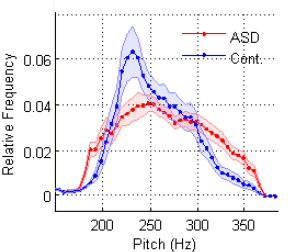
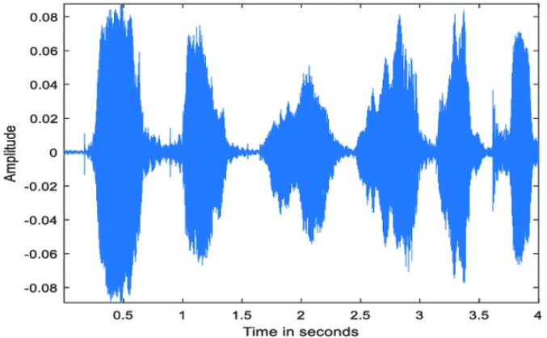
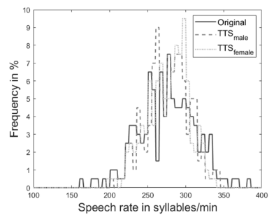

Extroverted 70%

You might notice a middle-ground pitch tone in your speech. Your speaking rate tends to be moderate, with a thoughtful and deliberate choice of words.
Introverted 30%

Your speech might reflect a more expressive pitch tone, leaning towards the higher range. Your speaking rate is likely to be relatively fast, reflecting an energetic and dynamic communication style
Pitch
With a higher extroverted component, your speech have a more varied pitch.
Tone
The tone may be more expressive and outgoing due to the dominant extroverted component.
Speaking Rate
The speaking rate may lean towards a moderate to fast pace. Extroverts often engage in more rapid and lively communication.